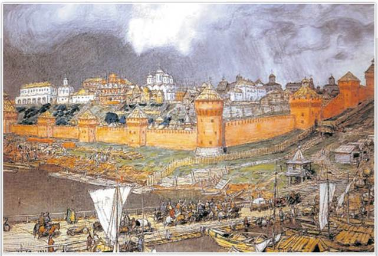
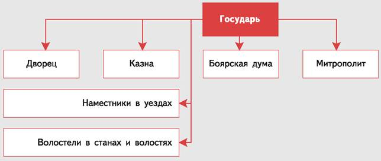
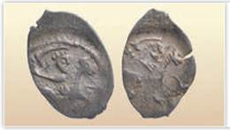
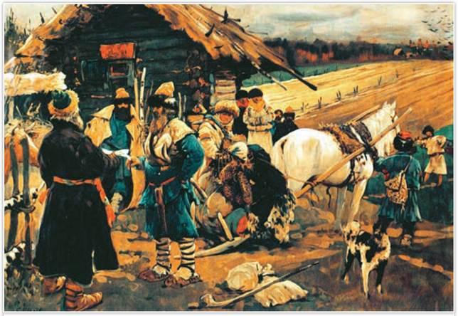
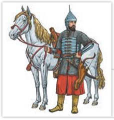
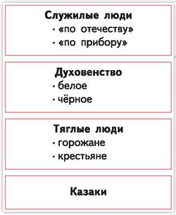
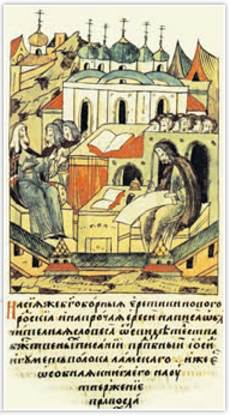

Московский Кремль при Иване III. Художник А. Васнецов. 1921 г. Музей Москвы
На основе картин А. Васнецова и текста учебника составьте таблицу «История Московского Кремля от основания Москвы до конца XV в.».
РОССИЯ
МИР
1. Система государственного управления. По мере объединения русских земель вокруг Москвы шло становление новых органов власти. Старая удельная система уже не годилась, так как исчезли прежде самостоятельные великие и удельные князья, их дружины и суд. Реформы государственного управления, проведённые Иваном III, заложили основы централизации в едином Российском государстве.
По важным делам государь советовался с боярами, входившими в Боярскую думу. В XV в. Дума была невелика: 6—12 думных бояр (высший чин), столько же окольничих (более низкий чин). Позже появились думные дворяне и думные дьяки. Боярская дума являлась высшим совещательным органом при государе.
Важнейшим органом управления после Думы была Казна. В ней хранились серебряные монеты, золотые украшения, дорогая одежда, меха, драгоценные камни, а также печати и государственный архив. Руководил Казной боярин-казначей. Казна контролировала сбор налогов и отвечала за внешнюю политику. Из органов управления вотчинами выросла система дворцов. Хозяйством великого князя ведал Дворец, возглавляемый дворецким. Новгородом управлял из Москвы Новгородский дворец, Тверью — Тверской во главе с боярами-дворецкими. Им помогали дьяки, которые происходили из незнатных людей, начинавших службу подьячими (писцами). Постепенно начали формироваться постоянно действующие исполнительные органы — приказы.

Система управления в Российском государстве в конце XV в.
Какие органы государственного управления были центральными, а какие — местными?

Денга. Монета времени правления Ивана III
При Иване III практически полностью была прекращена чеканка монет удельных княжеств. А его сын Василий впервые приказал вместо имени князя чеканить на монетах надпись «Государь Всея Руси». Это изменение подчёркивало статус правителя как собирателя русских земель.
Территория государства делилась на уезды. Они повторяли своими очертаниями границы прежних уделов. Новгородская земля, как и до присоединения к Москве, делилась на пятины. Уезды включали в себя несколько волостей и станов. Для управления уездами Москва посылала наместников из бояр. Волостями и станами руководили волостели — обычно незнатные служилые люди. Наместники и волостели не получали плату от государства за свою работу. Они жили за счёт части тягла (налогов) и судебных штрафов (присудов), которые платило им местное население. Такая система содержания должностных лиц называется кормлением.
Кормление воспринималось как награда за прежние заслуги. Контролировать деятельность наместников из столицы было трудно. Родилась даже поговорка о произволе наместников: «До Бога — высоко, до царя — далеко, я — близко, кланяйся мне низко!»
Помимо уездов, внутри государства существовали небольшие уделы, правителями которых являлись братья государя. Они не могли чеканить свою монету, судить за убийство. Если у них не было сыновей, то после их смерти удел переходил к великому князю.
2. Местничество и право. С конца XV в. бояре получали должности в соответствии со знатностью своего рода и сроком службы предков московскому князю. Сведения о назначении на должности (места) записывали в особые книги. Система распределения государственных должностей с учётом происхождения и служебного положения предков называется местничеством. Способные, но неродовитые не могли занимать высокие должности, что наносило вред государству.
В то же время местничество позволило уравнять роды старинных московских бояр с прибывшими в столицу потомками удельных князей Рюриковичей и Гедиминовичей. Оно вызывало местнические споры, из-за которых бояре не могли объединяться и противостоять государю, но не вело к тяжёлым усобицам.

Отъезд крестьянина от помещика в Юрьев день. Художник С. Иванов. 1908 г.
Одни историки видят в статье Судебника о Юрьевом дне начало закрепощения крестьян. Другие считают, что крестьяне и прежде уходили от своих владельцев только осенью, когда были завершены работы в поле. Церковный праздник Юрьев день выпадал на 26 ноября.
Какие детали картины говорят о том, что изображена сцена расчёта крестьянина в Юрьев день? Какое имущество крестьянин увозит с собой после уплаты пожилого, а что оставляет бывшему владельцу?
К концу XV в. Русская Правда устарела. Единое государство нуждалось в новом своде законов, поэтому в 1497 г. был составлен общерусский Судебник. Новый свод законов определил наказания за воровство, разбои, убийства и другие преступления, а также закрепил положение (статус) различных слоёв в обществе. Судебник ввёл единый срок перехода крестьян к другому владельцу один раз в году — за неделю до и неделю после осеннего Юрьева дня (26 ноября). Крестьяне уходили, заплатив пожилое — сбор в пользу хозяина земли. Судебник Ивана III был одним из первых в Европе опытов создания общегосударственного свода законов.
3. Территория и население единого государства. По размеру территории Россия являлась самой большой европейской страной. Суровый климат, долгая история выплаты дани, разорение земель во времена ордынского владычества сказывались на экономическом развитии государства.
Основным занятием крестьян по-прежнему было земледелие, в котором применялись подсека, перелог, двуполье. В некоторых районах появилось трёхполье. Развивались скотоводство, промыслы, ремесло и торговля. Однако в стране по-прежнему господствовало натуральное хозяйство: почти все необходимые для жизни товары производились и потреблялись на месте.
В конце XV в. население России составляло от 2,1 до 2,8 млн человек, что было в 2 раза меньше числа жителей Англии и в 8 раз меньше населения Франции. Оно делилось на ряд сословных групп. На вершине социальной лестницы стоял великий князь московский — государь всея Руси. Он имел свои дворцовые вотчины, но также являлся верховным собственником всех государственных (чёрных) земель.
Все жители (кроме духовенства) делились на служилых и тяглых. К тяглым относилось более 90% населения страны. Тягло включало в себя уплату налогов и несение ряда повинностей (постойной, подводной, строительной и т. д.). Внутри тяглого и служилого населения шёл процесс формирования сословий — общественных групп, обладавших определёнными правами и обязанностями, которые передавались по наследству.
Служилые людей «по отечеству» имели право владеть землёй с крестьянами и не платить налоги. Служба являлась наследственной обязанностью, начинали её в 15 лет и несли, как правило, до смерти. Среди служилых «по отечеству» можно выделить бояр и детей боярских (потомков московских слуг вольных и провинциальных бояр). Бояре занимали высшие должности — членов Боярской думы, воевод, наместников и т. д. За службу им жаловали большие вотчины и поместья. Но государь мог забрать вотчину или поместье не только за вину, но и по своему усмотрению. С расширением границ росло землевладение бояр, поэтому бояре были заинтересованы в укреплении единого государства.

Всадник поместной конницы
К какой группе общества относился воин поместной конницы — к служилым или тяглым? Какие права и обязанности он имел?
Дети боярские служили рядовыми воинами конного ополчения. За службу они получали поместья, но могли владеть и небольшими вотчинами. Получив поместье, служилые люди связывали своё благополучие со службой московскому князю. В отличие от вотчины поместье нельзя было продать, подарить, наследовать или заложить в монастырь. Детям боярским, ушедшим со службы по болезни или старости, а также их вдовам и малолетним сиротам оставляли часть поместья.
При Иване III начало формироваться сословие служилых людей «по прибору» (то есть по набору). К ним относились пушкари и пехотинцы, которых набирали из простых людей. Из детей боярских и служилых людей «по прибору» набирали дьяков и подьячих, служивших при Казне и Дворце.
На особом положении находились служилые иностранцы — «фрязи» (итальянцы) и «немцы» (выходцы из разных стран Западной Европы). Это были пушкари, архитекторы, инженеры, ремесленники. Им выдавали денежное жалованье, «корм» (продукты питания) и разрешали исповедовать свою веру.
Отдельное сословие составляло духовенство — чёрное и белое. Белое духовенство — священники и дьяконы — служило в храмах, могло иметь семью. Чёрное духовенство составляли монахи. Они жили в монастырях, отрекались от мирской жизни, не имели права заводить семью. Среди монахов были младшие (иноки) и старшие (старцы). Из числа старцев назначались настоятели монастырей — игумены и все чины православной церкви — архиепископы, епископы, глава Русской православной церкви — митрополит. Монастыри владели большим количеством вотчин. Им принадлежало до 40% заселённых владельческих земель.
Тяглое население было представлено крестьянами и горожанами. Свободных крестьян, живших общинами на государственных (чёрных) землях, называли черносошными. Владельческие крестьяне жили на поместных или вотчинных землях, дворцовые — в сёлах, приписанных к Государеву дворцу. В XV в. крупными землевладельцами являлись монастыри. Церковные вотчины обрабатывали монастырские крестьяне.
Владельческие, дворцовые, монастырские крестьяне, кроме тягла государю, несли повинности в пользу владельца земли. Они платили хозяину земли оброк (зерном, мясом, мёдом и другими продуктами своего труда) и выполняли барщину (бесплатные работы).

Сословия в России в XVI в.
С опорой на текст параграфа и схему расскажите о сословных группах в Российском государстве.
В городах жили купцы и посадские люди (ремесленники и мелкие торговцы). Горожан в XV в. было немного — не более 3—5% населения. Ремесленных цехов, как в Западной Европе, Русь не знала. Купцы объединялись в товарищества.
Особую общественную группу составляли холопы. Так называемые обельные холопы являлись полными, часто наследственными, рабами. В конце XV в. на
Руси распространилось также кабальное холопство. Человек брал в долг и обещал отрабатывать проценты до смерти своего хозяина. Оформлялось это специальной грамотой — служилой кабалой. После смерти господина кабальный холоп получал свободу. Но, как правило, не имея средств к существованию, он тут же составлял новую служилую кабалу. Холопы не несли тягла в пользу государя. Также не несли повинности нищие, скоморохи, бродяги-чернорабочие. Вне закона находились люди, промышлявшие воровством («тати»), и разбойники («лихие люди»).
В XV столетии в поисках новых земель люди направлялись всё дальше на восток — к Волге, в Приуралье; на север — к Белому морю (в Поморье); на юг — к Дону. У Волги и Дона, в приграничных с татарскими ханствами землях, жить было опасно. Здесь обитали группы вооружённых людей, которых называли казаками. Они отчасти занимались промыслами (охотой, рыбной ловлей), но в основном жили военной добычей: нападали на купеческие караваны, совершали набеги в чужие приграничные земли. Часть военной добычи и промысловых товаров казаки продавали в русских землях. Они были независимы от государственной власти, сами выбирали предводителей — атаманов. Москва помогала казакам хлебом и оружием, так как они, по сути, являлись пограничной стражей Руси у Дикого поля. Так называли степи у нижнего Днепра, Северского Донца и Дона, после того как в конце XIV в. их разорил Тимур.
4. Церковь и государство. Конец XV — начало XVI в. стало временем распространения ересей — религиозных течений, представители которых подвергали критике ряд положений христианской веры. Еретики — отступники от православной веры считали, что иконы не нужны, отрицали божественное происхождение Иисуса Христа. Центрами вольнодумства были Новгород и Псков, имевшие связи с Западной Европой. Яростным борцом с еретиками был святитель Геннадий Новгородский. В 1499 г. под его руководством был подготовлен первый единый рукописный свод всех библейских книг на славянском языке — Геннадиевская Библия.
Церковнослужители спорили о пути развития Русской православной церкви и долге духовенства. Среди них выделялись нестяжатели и иосифляне. И те и другие выступали против еретиков — отступников от православной веры.
Нестяжатели во главе с монахом Нилом Сорским призывали церковь отказаться от владения монастырскими вотчинами, осуждали стяжание — накопление богатств. Они считали, что церкви не следует вмешиваться в государственные дела, она должна в первую очередь заботиться о спасении людских душ.
Последователей известного деятеля церкви Иосифа Волоцкого называли иосифлянами. Они полагали, что монастырям нужны земли, но не для личного обогащения, а чтобы духовенство, не думая о хлебе насущном, занималось молитвами, наставлением верующих, созданием книг, летописанием, помогало нуждающимся. Государя они считали наместником Бога на земле.
В религиозных спорах конца XV — начала XVI в. принимал участие и государь Иван III. Сначала он поддерживал нестяжателей, но затем перешёл на сторону иосифлян.

Иосиф Волоцкий пишет «обличительные словеса» против новгородских еретиков. Миниатюра из Лицевого летописного свода
Что объединяло нестяжателей и иосифлян? Чем их взгляды на развитие церкви различались?
ПОДВЕДЁМ ИТОГИ
Система управления единого Российского государства основывалась на сильной власти его правителя. Государь всея Руси опирался на Боярскую думу, важными органами в системе управления стали Казна и Дворец. При Иване III был принят общерусский свод законов — Судебник, возникла поместная система землевладения.
Вопросы и задания
Работаем с источником
Прочитайте текст статьи 57 Судебника и ответьте на вопросы.
О переходе крестьян. Крестьянам разрешается переходить из волости в волость, из села в село лишь в течение одного срока в году: за неделю до осеннего Юрьева дня (26 ноября) и в течение недели после осеннего Юрьева дня. За пользование двором крестьяне платят в степной полосе рубль, а в лесной — полтину. Если крестьянин проживёт у господина год, то при уходе он платит четверть стоимости двора, если два года — половину стоимости двора, три года — три четверти, а за четыре года он уплачивает стоимость всего двора.
Работаем с понятиями
Что такое кормление? Почему население часто было недовольно действиями кормленщиков?
ДОПОЛНИТЕЛЬНЫЕ МАТЕРИАЛЫ
«УЧИТЕЛЮ И УЧЕНИКУ».
Материалы к параграфу на портале «История.РФ».